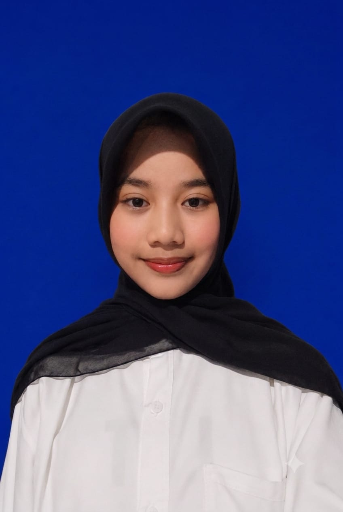

Website • Redesign
Redesain Website Access Media
Konsep ulang tampilan website dengan gaya modern dan navigasi jelas.
Klik untuk baca cerita ↗Saya pelajar Rekayasa Perangkat Lunak yang suka belajar membuat website, mencoba hal baru, dan mengubah ide sederhana menjadi karya digital yang menarik.

"Saya adalah pelajar jurusan Rekayasa Perangkat Lunak (RPL) di SMK Negeri Manonjaya. Saya tertarik pada dunia teknologi, pengembangan website, dan desain digital."
Saya senang mengeksplorasi ide, belajar dari proses, dan mengembangkan kemampuan melalui tugas sekolah maupun proyek pribadi dengan penuh tanggung jawab.
Membuat struktur halaman web & tampilan responsif.
Logika pemrograman backend dan pemrosesan data.
Penyimpanan dan manajemen database terstruktur.
Penyusunan materi presentasi & profil visual.
Kolaborasi dan komunikasi yang baik dalam proyek.
Mencari ide segar dan solusi dalam perancangan.
Konsep ulang tampilan website dengan gaya modern dan navigasi jelas.
Klik untuk baca cerita ↗
Mengelola data pelanggan, paket laundry, transaksi, dan laporan.
Klik untuk baca cerita ↗
Menyusun materi profil perusahaan dalam presentasi ringkas.
Klik untuk baca cerita ↗Menempuh studi dijurusan Rekayasa Perangkat Lunak memberikan saya fondasi yang kuat dalam memahami logika berpikir komputasional, algoritma pemrograman, perancangan struktur basis data, hingga teknik pengembangan aplikasi berbasis web secara menyeluruh. Di sini, setiap tugas dan praktikum selalu memotivasi saya untuk terus bereksperimen dengan kode.
Pengalaman PKL di Access Media membuka wawasan saya tentang bagaimana ritme kerja profesional yang sebenarnya di dunia industri teknologi. Di sini saya tidak hanya mengasah kedisiplinan dan komunikasi tim, tetapi juga dipercaya untuk merancang materi profil perusahaan serta mengeksplorasi pembuatan antarmuka digital yang komunikatif.
Punya ide atau ingin ngobrol seputar proyek? Yuk terhubung lewat WhatsApp!
💬 Hubungi Saya di WhatsApp ↗Deskripsi singkat proyek.
Cerita lengkap di balik pembuatan proyek.